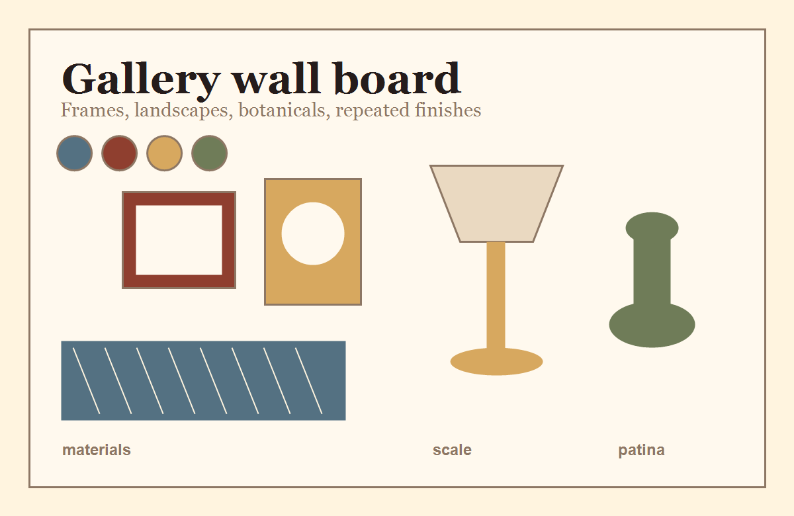

Vintage decor guide
Best Vintage Wall Art to Search For
Vintage wall art search ideas for landscapes, botanical prints, portraits, carved frames, and collected gallery walls.

Start here
Vintage wall art is one of the easiest ways to add age to a room without changing furniture.
Landscape prints
Landscapes are flexible because they work in living rooms, bedrooms, offices, and dining rooms.
Botanical and floral art
Botanical prints soften modern rooms and connect well with cottage or grandmillennial decor.
Portraits and figure studies
Portraits add personality, but they work best when balanced with simpler frames or quieter surrounding art.
Buyer checklist
Look for
- Frame and art dimensions
- Mat condition
- Hanging hardware
- Glass glare or cracks disclosed
Be careful with
- Stock photo instead of actual art
- No frame condition notes
- Warped paper
- Unclear reproduction status
Search terms to try
Use these terms as starting points, then add your room, color, size, or material.
Vintage Wall Art
Vintage Landscape Print
Vintage Picture Frame
Some marketplace links may become affiliate links. This does not affect your price.